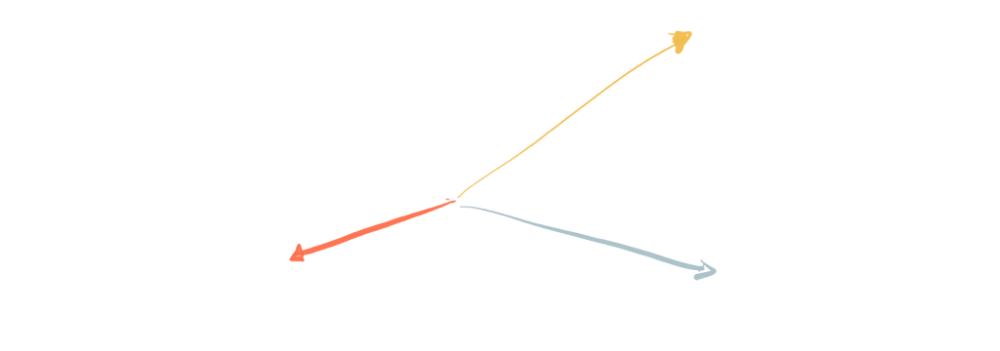

Senior UX Designer TraitsOne question I get asked, either from people in my team or during interview processes, is what makes a UX designer a Senior UX Designer? Here is my answer.
First of all, I don’t like the labels “junior” or “mid”. Everyone has different levels of expertise on different things, and we can learn a lot from any level designer. Experience is not directly tied to years of practice and the role and responsibilities may be different on each company.
But, as Dan Mall says, “Titles are important”, because they set expectations to people that you interact with, helping understand your role and responsibility.
So for me, the things that make a Senior UX Designer are:
Capacity
This means the level of complexity of the challenges you can solve. Identifying the real problem to solve, with the ability to define the right process, anticipate problems, moving at different levels of abstraction (between the strategy and the interface) to drive and deliver good results.
Autonomy
Being able to deal with ambiguity and solve a challenge with little direction. Good management of (changing) timelines, being able to scope the work and manage expectations of what you are going to produce. Having a good sense of communication, knowing when and what to share to get alignment, adapting your message to the audience you are delivering it to.
Collaboration
Working alongside others to generate better results based on each person skill set. Knowing when to lead and when to follow. Being great at giving and receiving feedback.
That’s it. So if you are shooting for that senior role, or need to explain it to people looking to grow in their career path, try to articulate it in terms of capacity, autonomy and collaborating with others.
References
Dan Mall “Titles are important”
Cyd Harrel “Getting to Senior in UX”